🎯 星球大战：帝国突击
Star Wars: Imperial Assault · 设计：Paul Dennen Jr. · Fantasy Flight Games 出版 · 2–5 人 · 官方英文规则书全文翻译（16 页 · AI 辅助机翻）
本页收录《星球大战：帝国突击》（Star Wars: Imperial Assault, 2014）的原版官方规则书全部 16 页（底本：Fantasy Flight Games 官方（Asmodee CDN），swi01_learn_to_play_v17.pdf），逐页随图排列，点击任意图片即可放大查看；每页下方默认折叠了该页的 AI 辅助中文机翻对照，需要时可展开。规则内容归 Fantasy Flight Games 及版权方所有，收录仅供个人学习查阅。
整理说明：机翻对照按本站术语口径对齐（牌库/手牌/回合/轮/板块/指示物等），PDF 图文混排页的语序可能与原书视觉顺序略有出入；规则细节请一律以页面上方原书页面为准。
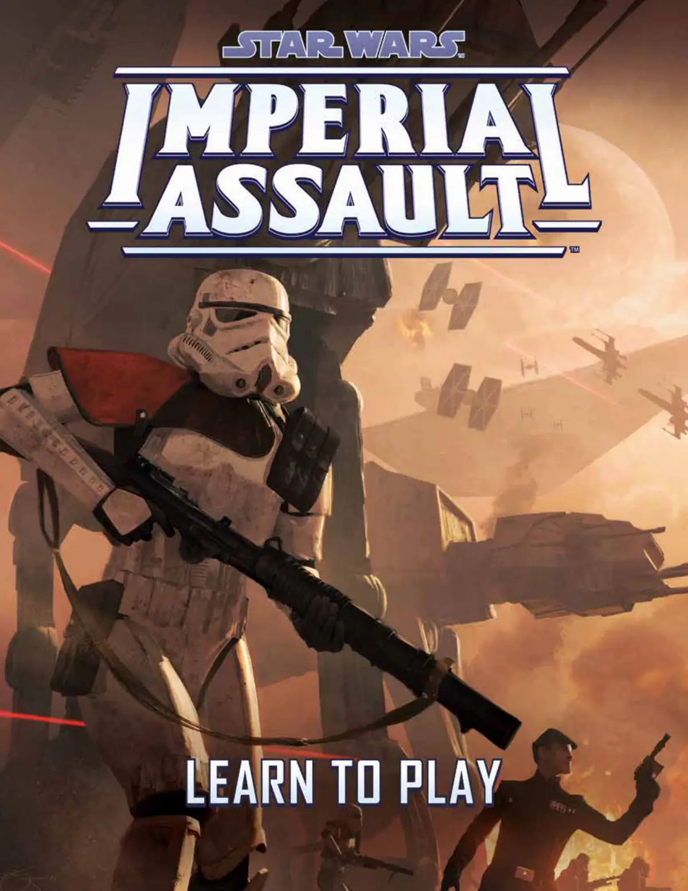
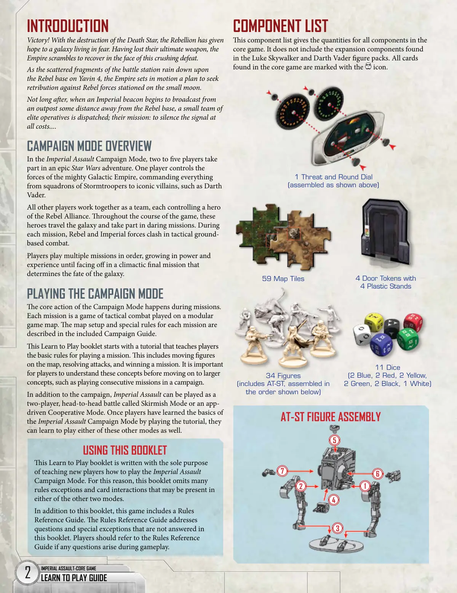
📝 第 2 页 AI 机翻对照（点击展开）
游戏入门指南
引言
胜利！随着死星的毁灭，反抗军给生活在恐惧中的银河系带来了希望。帝国失去了他们的终极武器，在这场毁灭性的打击面前，正竭力寻求恢复的机会。
当战斗站的碎片散落在雅文4号（Yavin 4）反抗军基地上时，帝国启动了一项计划，要对驻扎在这颗小卫星上的反抗军部队进行报复。
不久之后，当一座远离反抗军基地的前哨站开始广播帝国信标时，一支精英特工小队被派遣出去；他们的任务：不惜一切代价压制这个信号......
战役模式概述
在《星球大战：反抗军进攻》战役模式中，两名至五名玩家参与一场史诗般的《星球大战》冒险。一名玩家控制强大的银河帝国的力量，指挥从暴风突击队中队到标志性反派（如达斯·维达）的一切。
所有其他玩家作为一个团队合作，每人控制一名反抗军联盟的英雄。在整个游戏过程中，这些英雄们穿越银河系，参与大胆的任务。在每个任务中，反抗军和帝国部队在战术地面战斗中交锋。
玩家按顺序进行多个任务，力量和经验不断增长，直到在决定银河系命运的最终高潮任务中对决。
玩战役模式
战役模式的核心行动发生在任务期间。每个任务都是在模块化游戏地图上进行的战术战斗游戏。每个任务的地图设置和特殊规则在随附的战役指南中有描述。
这本入门指南从教程开始，教导玩家玩任务的基本规则。这包括在地图上移动单位、解决攻击以及赢得任务。玩家在继续进行更大概念（如战役中连续进行任务）之前，理解这些概念非常重要。
除了战役模式，《星球大战：反抗军进攻》还可以作为名为"遭遇战模式"的双人对战游戏，或由应用程序驱动的合作模式进行游戏。一旦玩家通过教程学习了《星球大战：反抗军进攻》战役模式的基础知识，他们也可以学习如何玩这些其他模式。
组件列表
此组件列出了核心游戏中的所有组件数量。它不包括卢克·天行者（Luke Skywalker）和达斯·维达（Darth Vader）人偶包中的扩展组件。核心游戏中的所有卡牌都标有
图标。
使用本手册
本入门手册的唯一目的是教导新玩家如何玩《星球大战：反抗军进攻》
战役模式。因此，本手册省略了许多可能存在于其他两种模式中的规则例外和卡牌互动。
除了本手册外，这款游戏还包括一份规则参考指南。规则参考指南解答了本手册中未回答的问题和特殊例外。如果在游戏过程中出现任何问题，玩家应参考规则参考指南。
11个骰子
（2个蓝色，2个红色，2个黄色，
2个绿色，2个黑色，1个白色）
59个板块
34个棋子
（包括AT-ST，按如下所示顺序组装）
4个门指示物和
4个塑料支架
1个威胁值和轮次指示盘
（如上所示组装）
AT-ST棋子组装
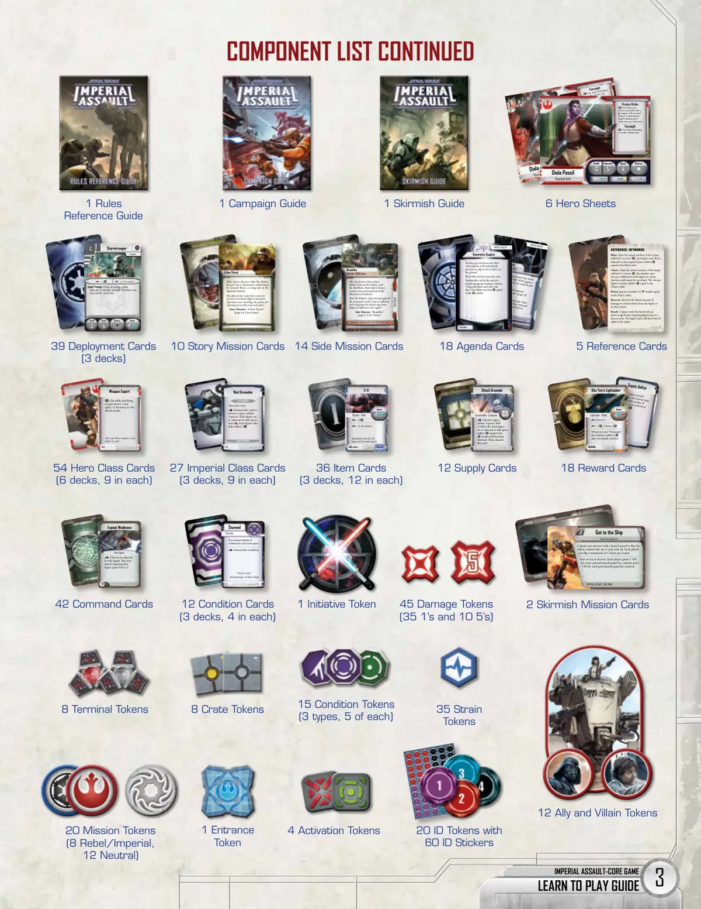
📝 第 3 页 AI 机翻对照（点击展开）
游戏入门指南
组件清单（续）
4 激活指示物
15 状态指示物
（3种类型，每种5个）
1 规则
参考指南
1 战役指南
1 小规模冲突指南
6 英雄卡
39 部署卡牌
（3副牌组）
5 参考卡
10 故事任务卡
14 侧边任务卡
18 议程卡
生命值
速度
防御
攻击
暴兵
小队训练：攻击时，若与另一名友方暴兵相邻，你可以重掷1个攻击骰。
B：+1生命值
B：+2精准度
暴兵
©LFL ©FFG
©LFL ©FFG
参考：关键词
爆炸：攻击结算后，若目标受到1点或更多伤害，则被攻击空间相邻的每个单位和物体受到等于爆炸数值的伤害。
劈砍：攻击结算后，若目标受到1点或更多伤害，攻击者可以选择一个他可以攻击的不同敌方单位或物体。所选单位或物体受到等于劈砍数值的伤害。
穿透：忽略等于穿透数值的格挡结果。
恢复：从单位或其英雄卡上移除指定数量的伤害或疲劳指示物。
延伸：拥有此关键词的单位可以对距离2格内的单位执行近战攻击。单位仍必须对目标保持视线。
叛军发现求救信标是由帝国军中冉冉升起的新星魏斯将军策划的诡计。
他的努力使他成为叛军高级指挥部感兴趣的人物。
特工们正在银河系中搜寻有关这位将军计划的情报...
故事任务："新威胁"
（第24页，核心游戏）。
新威胁
©LFL ©FFG
帝国与叛军早期战斗的战场之一，芬·西尼斯的英雄主义行动在解放翁德隆的过程中起到了关键作用。
现在帝国正在对这个叛乱世界进行报复。芬再次被召去帮助保护该星球免受帝国影响。
侧边任务："星火"
（第6页，核心游戏）。
芬·西尼斯
翁德隆 - 荒野
星火
奖励："精湛技艺"奖励卡
©LFL ©FFG
帝国工业
奖励："帝国工业"奖励卡
一个帝国测试设施最近取得了突破。在支持下，他们致命的创新很快就能投入使用。
将此卡作为侧边任务"生产手段"（第20页，核心游戏）使用。
英雄们解决任何其他侧边任务后，弃置此卡并获得下列奖励。
科雷利亚 - 帝国 - 设施
生产手段
3 影响力
©LFL ©FFG
帝国工业
恢复补给
储存贝斯卡和其他重要补给无疑将为地面士兵提供优势。
将此卡放置在你的游戏区域。
在任何任务期间，在回合结束时弃置此卡。选择1个帝国角色并掷2个红色骰。该角色恢复等于H结果的H值。
2影响力
©LFL ©FFG
生命值
耐力
防御
速度
被放逐的幽灵
远见
1C：防御时使用，重新掷1个防御骰。
迪亚拉·帕西尔
©LFL ©FFG
生命值
耐力
防御
速度
被放逐的幽灵
精确打击
2C：当你使用P武器声明攻击时。选择并移除目标防御池中的1个骰。每激活一次限一次。
远见
1C：防御时使用，重新掷1个防御骰。
迪亚拉·帕西尔
©LFL ©FFG
54英雄职业卡牌
（6副牌组，每副9张）
©LFL ©FFG
"如果它能击倒一个暴兵，我就能让它发挥作用。"
武器专家
2经验值
1C：攻击时使用，获得穿透1并在攻击结果上应用+2精准度。
27帝国职业卡牌
（3副牌组，每副9张）
©LFL ©FFG
1经验值
装备
仅限暴兵
A：弃置此卡选择一个3格内的区域。该区域上或相邻的每个角色进行J检定。每个未通过检定的角色受到1C伤害。
暴乱手榴弹
军事力量
36物品卡牌
（3副牌组，每副12张）
©LFL
©FFG
攻击
所有帝国暴兵的标准装备。
400信用点
爆能枪 - 步枪
B：+2H
B：+2精准度
E-11
12补给卡牌
©LFL ©FFG
震撼手榴弹
消耗品 - 爆炸物
A：选择一个3格内的区域。掷1个黄色骰。该区域上或相邻的每个角色受到等于H结果的H伤害并变为眩晕状态。然后，弃置此卡。
18奖励卡牌
©LFL ©FFG
奖励
补给不足
在每个任务开始时，英雄可以花费100信用点。如果他们不这样做，每个英雄受到2C伤害。
©LFL
©FFG
攻击
奖励
光剑 - 刀刃
：穿透3
：+1H，劈砍2H
当你使用"远见"时，攻击解决后攻击者受到1H伤害。
舒燕的光剑
20任务指示物
（8个反抗军/帝国，12个中立）
35 疲劳
指示物
8个箱子指示物
8个终端指示物
20个带有60张ID贴纸的ID指示物
1个入口
指示物
2个遭遇任务卡牌
©LFL
©FFG
A
帝国突击核心游戏
一个角色可以与发射面板互动，将指示物翻到彩色面朝上或灰色面朝上。每个玩家每回合最多可以翻转1个指示物。
每回合结束时：每个玩家为他控制的每个彩色发射面板获得5VP，为他控制的每个灰色发射面板获得2VP。
莫斯艾斯利郊区
登上飞船
12状态卡牌
（3副牌组，每副4张）
©LFL ©FFG
眩晕
有害
你不能攻击或自愿离开你的区域。
A：弃除此状态卡。
"设置为眩晕模式。"
——暴兵，新希望
42指挥卡牌
©LFL ©FFG
暴露弱点
A：选择一个相邻的敌对角色。下一次针对该角色的攻击
单位获得穿透3。
任意单位
45个伤害指示物
（35个1点和10个5点）
1个先手指示物
12个盟友和反派指示物
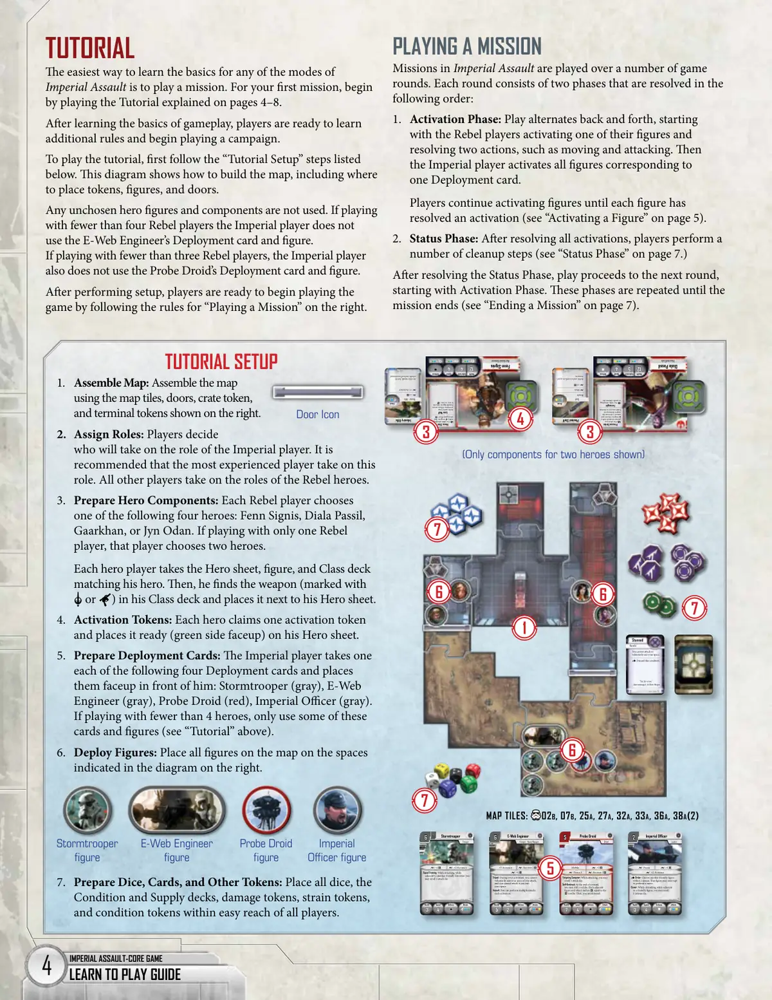
📝 第 4 页 AI 机翻对照（点击展开）
游戏指南
进行任务
《星球大战：侵略战》中的任务会进行多个游戏轮次。每轮包含两个阶段，按以下顺序解决：
1. 激活阶段：玩家轮流进行，从义军玩家激活一个他们的单位并执行两个行动（如移动和攻击）开始。然后帝国玩家激活与一张部署卡对应的所有单位。
玩家继续激活单位，直到每个单位都完成了一次激活（参见第5页"激活单位"）。
- 状态阶段：解决完所有激活后，玩家执行多个清理步骤（参见第7页"状态阶段"）。
解决完状态阶段后，游戏进入下一轮，从激活阶段开始。这些阶段会重复进行，直到任务结束（参见第7页"结束任务"）。
教程设置
1. 组装地图：使用右侧显示的地图板块、门板、木箱指示物和终端指示物组装地图。
2. 分配角色：玩家决定谁将扮演帝国玩家。建议由最有经验的玩家担任此角色。所有其他玩家扮演义军英雄角色。
3. 准备英雄组件：每位义军玩家选择以下四个英雄之一：芬·西尼斯、迪阿拉·帕西尔、加尔坎或简·奥丹。如果只有一位义军玩家，该玩家选择两位英雄。
每位英雄玩家拿取与其英雄对应的英雄卡、模型和职业牌组。然后，他在自己的职业牌组中找到武器（标记有P或O）并将其放在英雄卡旁边。
4. 激活指示物：每位英雄拿取一个激活指示物，并将其准备就绪（绿色面朝上）放在自己的英雄卡上。
5. 准备部署卡：帝国玩家拿取以下四张部署卡各一张，并将其正面朝上放在自己面前：暴风兵（灰色）、E-Web工程师（灰色）、探测机器人（红色）、帝国军官（灰色）。
如果英雄少于4位，只使用部分这些卡牌和模型（参见上方的"教程"）。
6. 部署模型：将所有模型放在右侧图表中标示的位置上。
7. 准备骰子、卡牌和其他指示物：将所有骰子、状态和补给牌组、伤害指示物、疲劳指示物和状态指示物放在所有玩家容易触及的位置。
暴风兵
模型
探测机器人
模型
E-Web工程师
模型
帝国
军官模型
生命值
速度
防御
攻击
探测机器人
机动
B: +2H
B: 穿透2
B: 恢复2H
瞄准计算机：攻击时，你可以重掷1个攻击骰。
自毁：在轮次结束时，你可以投掷1个红色骰。每个相邻
和物体承受等于骰子结果的H伤害。然后，你被击败。
机器人
©LFL ©FFG
教程
学习《星球大战：侵略战》(Imperial Assault) 任何模式基础的最简单方法是进行一场任务。对于你的第一个任务，请从第4-8页解释的教程开始。
在了解游戏基础后，玩家可以学习额外规则并开始进行战役。
要进行教程，首先遵循下面列出的"教程设置"步骤。此图展示了如何构建地图，包括放置指示物、角色和门的位置。
任何未被选中的英雄角色和组件都不使用。如果少于4名义军玩家，帝国玩家不使用E-Web工程师的部署卡和角色。
如果少于3名义军玩家，帝国玩家也不使用探测机器人的部署卡和角色。
完成设置后，玩家可以遵循右侧"进行任务"的规则开始游戏。
生命值
速度
防御
攻击
E-Web工程师
三脚架：在你的激活期间，如果你攻击，你不能自愿离开你的格；如果你离开你的格，你不能攻击。
突击：你可以在每次激活期间执行多次攻击。
+3 精确度
B：恢复2H
B：+1H
重型武器部队
©LFL ©FFG
生命值
速度
防御
攻击
帝国军官
命令：选择2格内的另一个友方角色。该角色可以中断以执行一次移动。
畏缩：在防御时，如果与友方角色相邻，你可以重掷1个防御骰子。
B：专注
B：+1H
B：+2 精确度
领袖
©LFL ©FFG
生命值
速度
防御
攻击
暴风兵
小队训练：在攻击时，如果与另一名友方暴风兵相邻，你可以重掷1个攻击骰子。
B：+1H
B：+2 精确度
暴风兵
©LFL ©FFG
生命值
耐力
防御
速度
被放逐的幽灵
精确打击
2C：当你使用P武器宣布攻击时使用。选择并移除目标防御池中的1个骰子。
每激活限一次。
预见
1C：在防御时使用以重掷1个防御骰子。
迪亚拉·帕西尔
©LFL ©FFG
生命值
耐力
防御
速度
芬·西尼斯
破坏射击
1C：在使用O武器攻击时使用。此攻击获得1H爆炸效果。
孤狼
在你的激活结束时，如果没有友方角色与你相邻，恢复1C。
经验丰富的老兵
©LFL ©FFG
©LFL
©FFG
攻击
一个较老的型号，但它可靠且维护良好。
步兵步枪
：+1H
：+1 精确度
爆能枪-步枪
©LFL
©FFG
攻击
同样微妙且多才多艺。
长棍
触及
：眩晕
：+1H
塑钢长棍
（仅显示两名英雄的组件）
©LFL ©FFG
眩晕
有害
你不能攻击或
自愿退出你的太空。
A：弃掉这个状况。
"准备眩晕。"
–暴兵，《新希望》
门图标
地图板块：
02b, 07b, 25a, 27a, 32a, 33a, 36a, 38a(2)
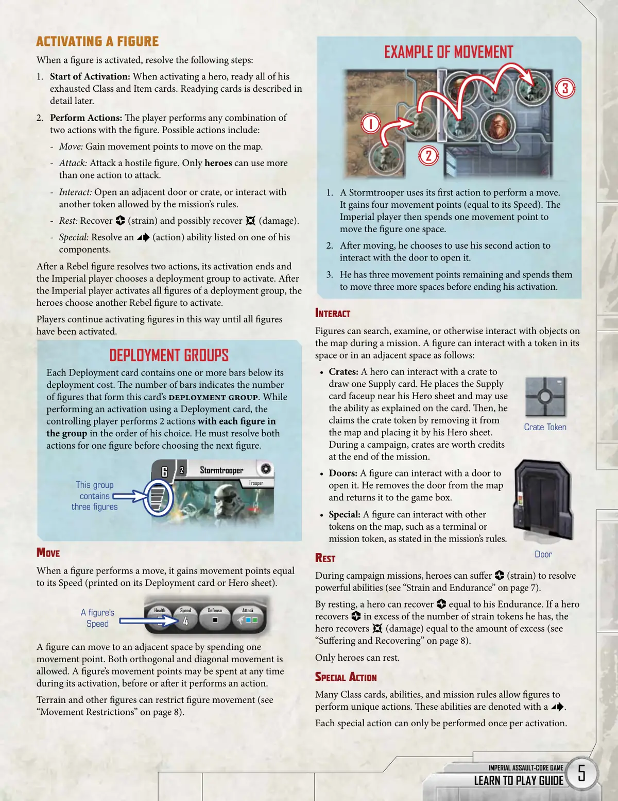
📝 第 5 页 AI 机翻对照（点击展开）
新手指南
激活一个角色
当一个角色被激活时，执行以下步骤：
1. 激活开始：当激活一个英雄时，准备他所有已疲劳的职业和装备卡牌。准备卡牌将在后面详细描述。
2. 执行行动：玩家使用该角色执行任意两个行动的组合。可能的行动包括：
-- 移动：获得移动点数以在地图上移动。
-- 攻击：攻击一个敌对角色。只有英雄可以使用超过一个行动进行攻击。
-- 互动：打开相邻的门或箱子，或根据任务规则与其他指示物互动。
-- 休息：恢复C（疲劳值）并可能恢复H（伤害值）。
-- 特殊：解决其组件上列出的一个A（行动）能力。
当一个义军角色执行两个行动后，其激活结束，帝国玩家选择一个部署组进行激活。当帝国玩家激活了一个部署组中的所有角色后，英雄玩家选择另一个义军角色进行激活。
玩家以这种方式继续激活角色，直到所有角色都被激活。
移动
当一个角色执行移动时，它获得等于其速度（印在其部署卡或英雄表上）的移动点数。
生命值
速度
防御
攻击
©LFL ©FFG
一个角色的
速度
一个角色可以通过花费一个移动点数移动到相邻的格。允许正交和对角线移动。一个角色的移动点数可以在其激活期间的任何时候花费，在执行行动之前或之后。
地形和其他角色可能会限制角色移动（参见第8页的"移动限制"）。
部署组
每张部署卡在其部署成本下方包含一个或多个条形。条形的数量表示构成该卡部署组的角色数量。在使用部署卡执行激活时，控制玩家按照他选择的顺序组中的每个角色执行2个行动。他必须解决一个角色的两个行动后才能选择下一个角色。
暴风兵
士兵
这个组
包含三个角色
互动
角色可以在任务期间搜索、检查或以其他方式与地图上的物体互动。一个角色可以与其所在格或相邻格中的指示物互动，如下：
• 箱子：英雄可以与箱子互动以摸一张补给卡。他将补给卡面朝上放在其英雄表附近，并可以使用卡片上解释的能力。然后，他通过从地图上移除箱子指示物并将其放在其英雄表旁来声称该箱子。
在战役期间，箱子在任务结束时值信用点。
• 门：一个角色可以与门互动以打开它。他从地图上移除门
并将其放回游戏盒中。
• 特殊：一个角色可以与地图上的其他指示物互动，例如终端或任务指示物，具体按照任务规则所述。
休息
在战役任务中，英雄可以承受C（压力）来施展强大的能力（参见第7页的"压力与耐力"）。
通过休息，英雄可以恢复等于其耐力的C值。如果英雄恢复的C值超过其拥有的压力指示物数量，英雄会恢复等于超出量的H（伤害）（参见第8页的"承受与恢复"）。
只有英雄可以休息。
特殊行动
许多职业卡牌、能力和任务规则允许角色执行特殊行动。这些能力用A标记。
每个特殊行动每回合激活只能执行一次。
移动示例
- 一个暴风兵使用其第一个行动执行移动。它获得四个移动点（等于其速度）。帝国玩家然后花费一个移动点将角色移动一格。
2. 移动后，他选择使用第二个行动与门互动以打开它。
3. 他还剩下三个移动点，并花费它们移动了三个额外的空间，然后结束其激活。
木箱指示物
门
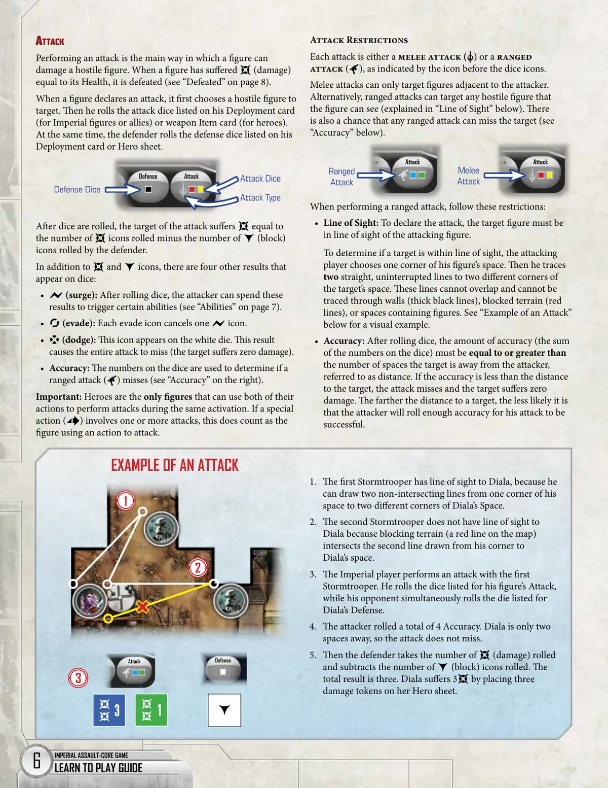
📝 第 6 页 AI 机翻对照（点击展开）
游戏指南
攻击
执行攻击是单位造成伤害敌方单位的主要方式。当一个单位承受的伤害值(H)等于其生命值时，它就被击败了（参见第8页的"被击败"）。
当一个单位宣布攻击时，它首先选择一个敌方单位作为目标。然后，他投掷其部署卡（帝国单位或盟友单位）或武器物品卡（英雄单位）上列出的攻击骰子。
同时，防御者投掷其部署卡或英雄卡上列出的防御骰子。
防御
攻击
©2014 LFL ©FFG
防御骰子
攻击骰子
攻击类型
骰子投掷后，攻击目标承受的伤害值(H)等于攻击者投出的H图标数量减去防御者投出的G（格挡）图标数量。
除了H和G图标外，骰子上还有四种其他结果：
• B（涌动）：投掷骰子后，攻击者可以花费这些结果来触发某些能力（参见第7页的"能力"）。
• F（闪避）：每个闪避图标可以取消一个B图标。
• E（躲闪）：这个图标出现在白色骰子上。这个结果会导致整个攻击未命中（目标承受零伤害）。
• 精确度：骰子上的数字用于确定远程攻击(O)是否未命中（参见右侧的"精确度"）。
重要提示：英雄是唯一可以在同一激活过程中使用两个行动执行攻击的单位。如果一个特殊行动(A)涉及一次或多次攻击，这确实算作该单位使用行动进行攻击。
攻击限制
每次攻击要么是近战攻击(P)，要么是远程攻击(O)，如骰子图标前的图标所示。
近战攻击只能攻击攻击者相邻的单位。 alternatively，远程攻击可以攻击该单位能够看到的任何敌方单位（在下文"视线"中解释）。任何远程攻击都有可能未命中目标（参见下文的"精确度"）。
ense
攻击
©LFL ©FFG
ense
攻击
©2014 LFL ©FFG
远程
攻击
近战
攻击
执行远程攻击时，请遵循以下限制：
• 视线：要宣布攻击，目标单位必须在攻击单位的视线范围内。
要确定目标是否在视线范围内，攻击玩家选择其单位所在空间的一个角。然后，他向目标空间的两个不同角画出两条不间断的直线。这些线不能重叠，也不能穿过墙壁（粗黑线）、被阻挡的地形（红线）或包含单位的区域。参见下方的"攻击示例"以获取视觉示例。
• 精确度：投掷骰子后，精确度（骰子上数字的总和）必须大于或等于
目标与攻击者之间的距离，称为距离。如果准确度小于到目标的距离，则攻击未命中，目标受到零点伤害。到目标的距离越远，攻击者掷出足够准确度以使攻击成功的可能性就越小。
攻击示例
1. 第一个暴风兵拥有对黛拉的视野，因为他可以从自己所在格的一个角落向黛拉所在格的两个不同角落画出两条不相交的线。
2. 第二个暴风兵没有对黛拉的视野，因为障碍地形（地图上的红线）与他从自己角落到黛拉所在格的第二条线相交。
3. 帝国玩家使用第一个暴风兵进行攻击。他掷出其角色攻击列出的骰子，同时对手掷出黛拉防御列出的骰子。
- 攻击者总共掷出4点准确度。黛拉只有两格远，所以攻击未未命中。
- 然后防御者取掷出的H（伤害）数量并减去掷出的G（格挡）图标数量。总结果为三。黛拉受到3点伤害，在她的英雄卡上放置三个伤害指示物。
防御
e
攻击
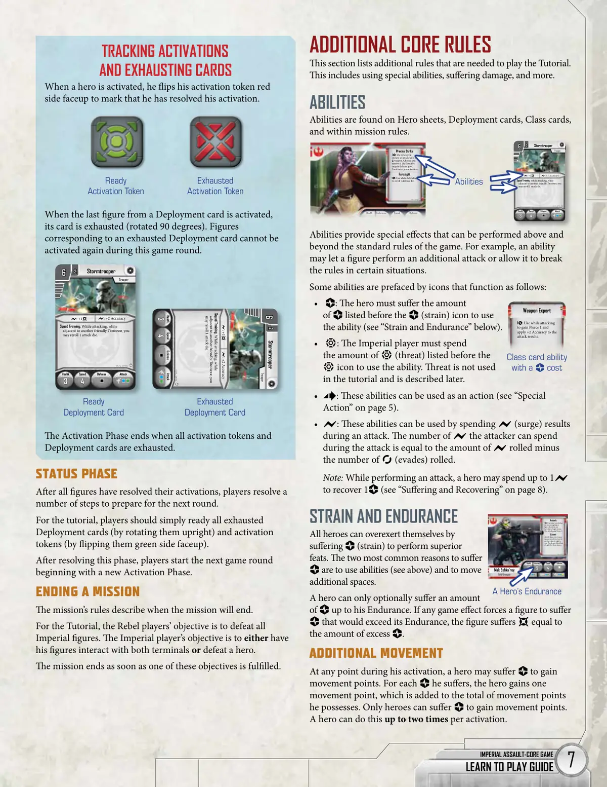
📝 第 7 页 AI 机翻对照（点击展开）
游戏指南
状态阶段
在所有单位完成其激活后，玩家将执行若干步骤，为下一轮做准备。
对于教程，玩家应只需将所有耗尽的部署卡（通过将其旋转至直立状态）和激活指示物（通过将其翻至绿色面朝上）准备就绪。
完成此阶段后，玩家开始下一轮游戏，从新的激活阶段开始。
结束任务
任务的规则描述了任务何时结束。
对于教程，反叛玩家的目标是击败所有帝国单位。帝国玩家的目标是要么让他的单位与两个终端都互动，要么击败一名英雄。
一旦达成这些目标中的任何一个，任务即告结束。
额外核心规则
本节列出了进行教程所需的额外规则。
这包括使用特殊能力、承受伤害等。
能力
能力可在英雄卡、部署卡、职业卡以及任务规则中找到。
生命值
耐力
防御
速度
精准打击
2C：当你使用P武器宣布攻击时使用。选择并移除目标防御池中的1个骰子。
每激活限一次。
远见
1C：防御时使用，重新投掷1个防御骰子。
©LFL ©FFG
能力
生命值
速度
防御
攻击
暴风兵
小队训练：攻击时，若与另一名友军步兵相邻，你可以重新投掷1个攻击骰子。
B：+1H
B：+2精准度
步兵
©LFL ©FFG
能力提供超出游戏标准规则的特殊效果。例如，能力可能让单位执行额外攻击，或在特定情况下打破规则。
一些能力前有图标，功能如下：
• C：英雄必须承受C（紧张）图标前列出的C数量才能使用该能力（参见下文"紧张与耐力"）。
• D：帝国玩家必须花费D（威胁）图标前列出的D数量才能使用该能力。威胁在教程中不使用，将在后面描述。
• A：这些能力可以作为行动使用（参见第5页"特殊行动"）。
• B：这些能力可以通过在攻击期间花费B（爆发）结果来使用。攻击者在攻击期间可以花费的B数量等于投掷出的B数量减去投掷出的F（闪避）数量。
注意：执行攻击时，英雄最多可以花费1B来恢复1C（参见第8页"承受与恢复"）。
紧张与耐力
所有英雄都可以通过承受C（紧张）来过度劳累自己，以执行更出色的壮举。承受C的两个最常见原因是为了使用能力（见上文）和移动额外的格。
一位英雄可以选择性地承受最多等于其耐力的C点伤害。如果任何游戏效果强制一个角色承受超过其耐力的C点伤害，该角色承受等于超出C点伤害量的H点伤害。
额外移动
在其激活期间的任何时候，英雄可以承受C点伤害来获得移动点。每承受1点C伤害，英雄获得1个移动点，该移动点会添加到他拥有的移动点总数中。只有英雄可以通过承受C伤害来获得移动点。一名英雄每回合最多可以这样做两次。
生命值
耐力
防御
速度
埋伏
1C：当你宣布攻击一个没有你视线范围的敌方角色时使用。此次攻击获得穿透2。
隐蔽
距离你4格或更远的敌方角色没有你的视线范围。你不会阻挡这些角色的视线。
Mak Eshka'rey
大胆的叛乱者
©LFL ©FFG
英雄的耐力
追踪激活和卡牌耗尽
当英雄被激活时，他将他的激活指示物翻转为红色面朝上，以标记他已经完成了他的激活。
就绪
激活指示物
耗尽
激活指示物
当部署卡上的最后一个角色被激活时，该卡牌被耗尽（旋转90度）。对应于已耗尽部署卡的角色在本游戏回合中无法再次被激活。
生命值
速度
防御
攻击
暴风兵
小队训练：攻击时，若与另一名友军暴风兵相邻，你可以重掷1个攻击骰子。
B：+1H
B：+2 命中
暴风兵
©LFL ©FFG
生命值
速度
防御
攻击
暴风兵
小队训练：攻击时，若与另一名友军暴风兵相邻，你可以重掷1个攻击骰子。
B：+1H
B：+2 命中
暴风兵
©LFL ©FFG
就绪
部署卡
耗尽
部署卡
当所有激活指示物和部署卡都被耗尽时，激活阶段结束。
武器专家
1C：攻击时使用，获得穿透1并将+2应用于攻击结果。
带有C费用的职业卡能力
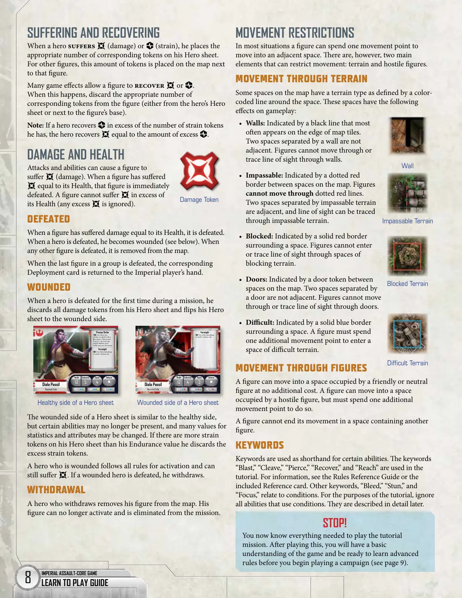
📝 第 8 页 AI 机翻对照（点击展开）
入门指南
受伤与恢复
当英雄承受 H（伤害）或 C（压力）时，他会在其英雄版图上放置相应数量的对应指示物。对于其他角色，这些数量的指示物会被放置在地图上该角色旁边。
许多游戏效果允许角色恢复 H 或 C。当这种情况发生时，从角色身上（从英雄的英雄版图上或角色底座旁边）丢弃相应数量的对应指示物。
注意：如果英雄恢复的 C 超过了其压力指示物的数量，英雄会恢复等于超额 C 数量的 H。
伤害与生命值
攻击和能力会导致角色承受 H（伤害）。当一个角色承受的伤害等于其生命值时，该角色立即被击败。角色承受的伤害不能超过其生命值（任何超额的 H 都会被忽略）。
被击败
当一个角色承受的伤害等于其生命值时，该角色被击败。当英雄被击败时，他会受伤（见下文）。当任何其他角色被击败时，它会被从地图上移除。当一个小组中的最后一个角色被击败时，对应的部署卡会返回给帝国玩家的手牌。
受伤
当英雄在任务中首次被击败时，他会从其英雄版图上丢弃所有伤害指示物，并将其英雄版图翻到受伤面。
生命值
耐力
防御
速度
被放逐的流亡者
远见
1C：防御时使用，重新投掷 1 防御骰。
迪亚拉·帕西尔
©LFL ©FFG
英雄版图的受伤面
生命值
耐力
防御
速度
被放逐的流亡者
精确打击
2C：当你使用 P 武器宣布攻击时。选择并移除目标防御池中的 1 个骰。每激活限一次。
远见
1C：防御时使用，重新投掷 1 防御骰。
迪亚拉·帕西尔
©LFL ©FFG
英雄版图的健康面
英雄版图的受伤面与健康面相似，但某些能力可能不再存在，并且许多统计和属性值可能会被更改。如果其英雄版图上的压力指示物数量超过其耐力值，他会丢弃超额的压力指示物。
受伤的英雄遵循所有激活规则，并且仍然可以承受 H。如果受伤的英雄被击败，他会撤退。
撤退
撤退的英雄将其角色从地图上移除。他的角色不能再被激活，并从任务中被淘汰。
伤害指示物
移动限制
在大多数情况下，角色可以花费一个移动点移动到相邻的格。然而，有两个主要因素可以限制移动：地形和敌对角色。
穿越地形移动
地图上的某些格具有由颜色定义的地形类型，
环绕太空的编码线。这些空间对游戏玩法有以下影响：
• 墙：由黑色线条表示，通常出现在地图板块的边缘。
被墙隔开的两个空间不相邻。单位不能穿过墙壁或通过墙壁建立视线。
• 不可通行：由地图上空间之间的红色虚线边框表示。单位不能穿过红色虚线。
被不可通行地形隔开的两个空间相邻，可以通过不可通行地形建立视线。
• 阻挡：由环绕空间的红色实线边框表示。单位不能进入或通过阻挡地形建立视线。
• 门：由地图上空间之间的门指示物表示。被门隔开的两个空间不相邻。单位不能穿过门或通过门建立视线。
• 困难地形：由环绕空间的蓝色实线边框表示。单位必须花费一个额外的移动力点才能进入困难地形空间。
穿越单位的移动
单位可以花费额外成本进入被友方或中立单位占据的空间。单位可以进入被敌方单位占据的空间，但必须花费一个额外的移动力点才能这样做。
单位不能在包含另一个单位的空间结束其移动。
关键词
关键词用作某些能力的简写。"爆炸"、"劈砍"、"穿透"、"恢复"和"触及"等关键词在教程中使用。有关信息，请参阅规则参考指南或随附的参考卡。其他关键词，如"流血"、"眩晕"和"专注"，与状态相关。就本教程而言，请忽略所有使用状态的技能。它们将在后面详细描述。
墙
阻挡地形
不可通行地形
困难地形
停止！
你现在已掌握进行教程任务所需的一切。完成此教程后，你将对游戏有基本了解，并准备好在开始战役前学习高级规则（见第9页）。
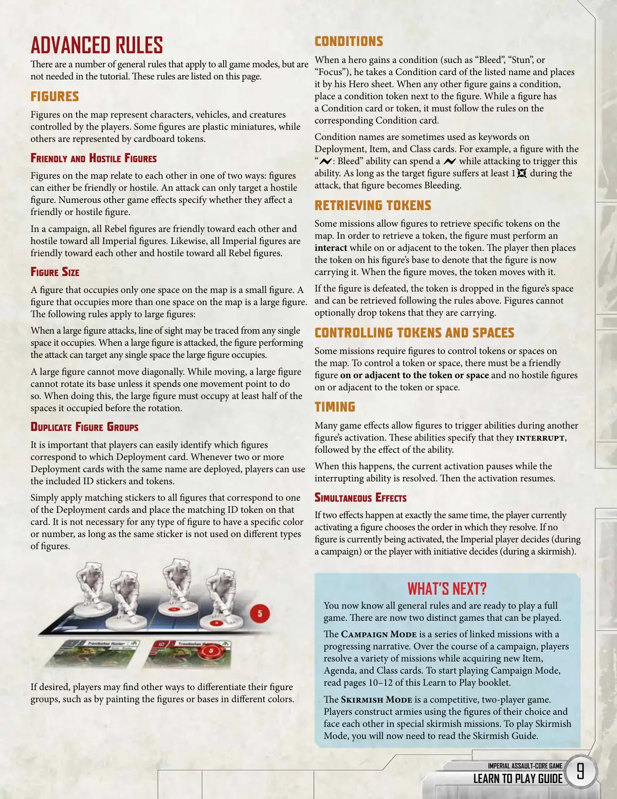
📝 第 9 页 AI 机翻对照（点击展开）
游戏指南
高级规则
有一些适用于所有游戏模式的通用规则，但在教程中不需要。这些规则列在本页。
模型
地图上的模型代表玩家控制的角色、载具和生物。一些模型是塑料小雕像，而其他则由纸板指示物表示。
友好模型与敌对模型
地图上的模型之间存在两种关系：模型可以是友好的或敌对的。攻击只能针对敌对模型。许多其他游戏效果会指定它们影响友好模型还是敌对模型。
在战役中，所有叛军模型彼此友好，并对所有帝国模型敌对。同样，所有帝国模型彼此友好，并对所有叛军模型敌对。
模型尺寸
在地图上只占据一个空间的模型是小模型。在地图上占据多个空间的模型是大模型。
以下规则适用于大模型：
当大模型攻击时，视线可以从其占据的任何单个空间进行追踪。当大模型被攻击时，执行攻击的模型可以瞄准大模型占据的任何单个空间。
大模型不能斜向移动。移动时，大模型不能旋转其底座，除非它花费一个移动力点来这样做。这样做时，大模型必须占据其旋转前所占据空间的一半以上。
重复模型组
玩家能够轻松识别哪些模型对应哪个部署卡非常重要。当部署两张或更多同名部署卡时，玩家可以使用包含的ID贴纸和指示物。
只需将匹配的贴纸应用到对应于一张部署卡的所有模型上，并将匹配的ID指示物放在该卡上。任何类型的模型都不需要有特定的颜色或编号，只要不同类型的模型不使用相同的贴纸即可。
如果需要，玩家可以找到其他方法来区分他们的模型组，例如将模型或底座涂成不同颜色。
状态
当英雄获得一种状态（如"流血"、"眩晕"或"专注"）时，他取一张列有该名称的状态卡，并将其放在他的英雄卡旁边。当任何其他模型获得一种状态时，在模型旁边放置一个状态指示物。当模型拥有状态卡或指示物时，它必须遵循相应状态卡上的规则。
状态名称有时被用作部署卡、物品卡和职业卡上的关键词。例如，拥有"B: 流血"能力的模型可以在攻击时花费一个B来触发此能力。
能力。只要目标单位在攻击中至少承受1点伤害，该单位就会进入流血状态。
回收指示物
一些任务允许单位回收地图上的特定指示物。要回收一个指示物，单位必须在与指示物相同或相邻的格子上执行互动。然后玩家将该指示物放置在其单位的底座上，表示该单位现在正携带它。当单位移动时，指示物也随之移动。
如果单位被击败，指示物会掉落在该单位所在的格子上，并可以按照上述规则回收。单位不能选择性地丢弃它们正在携带的指示物。
控制指示物和区域
一些任务要求单位控制地图上的指示物或区域。要控制一个指示物或区域，必须在指示物或区域上或相邻位置有一个友方单位，并且在指示物或区域上或相邻位置没有敌方单位。
时序
许多游戏效果允许单位在另一个单位的激活过程中触发能力。这些能力会指定为"中断"，然后是该能力的效果。
当这种情况发生时，当前激活会暂停，同时解决中断的能力。然后激活继续进行。
同时效果
如果两个效果同时发生，当前激活单位的玩家选择它们解决的顺序。如果没有单位正在被激活，在战役模式下由帝国玩家决定，在遭遇战模式下由先手玩家决定。
接下来是什么？
您现在已了解所有通用规则，可以开始完整游戏了。现在可以玩两种不同的游戏。
战役模式是一系列有关联的任务，具有递进的叙事性。在整个战役过程中，玩家完成各种任务，同时获得新的物品、议程和职业卡牌。要开始玩战役模式，请阅读本"入门指南"的第10-12页。
遭遇战模式是一种竞技性的双人对战游戏。玩家使用自己选择的单位组建军队，在特殊的遭遇战任务中相互对抗。要玩遭遇战模式，您现在需要阅读遭遇战指南。
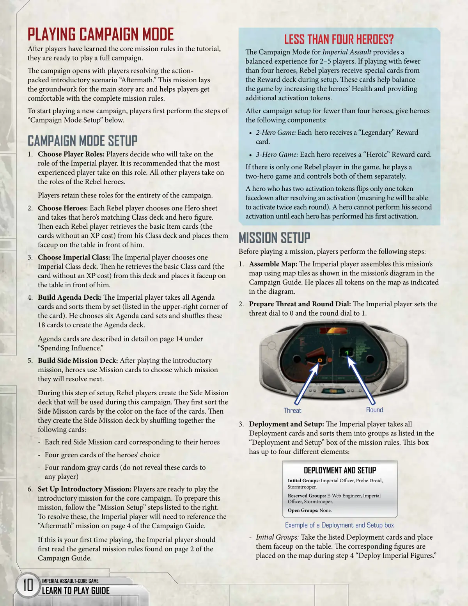
📝 第 10 页 AI 机翻对照（点击展开）
游戏入门指南
##游玩战役模式
在玩家通过教程学习了核心任务规则后，
他们就可以开始游玩完整的战役了。
战役开始时，玩家需要解决内容充实的入门任务"余波"(Aftermath)。
这个任务为整个主线故事奠定了基础，并帮助玩家熟悉完整的任务规则。
要开始游玩新战役，玩家首先需要执行下方的"战役模式设置"步骤。
战役模式设置
1. 选择玩家角色：玩家决定谁将扮演帝国玩家。建议由最有经验的玩家担任此角色。所有其他玩家扮演反抗军英雄。
玩家在整个战役中保持这些角色不变。
2. 选择英雄：每位反抗军玩家选择一张英雄卡牌，并拿取对应职业的牌组和英雄棋子。
然后每位反抗军玩家从其职业牌组中取出基础物品卡牌（没有XP费用的卡牌），并将其正面朝上放在自己面前的桌子上。
3. 选择帝国职业：帝国玩家选择一个帝国职业牌组。然后他从该牌组中取出基础职业卡牌（没有XP费用的卡牌），并将其正面朝上放在自己面前的桌子上。
4. 构建议程牌组：帝国玩家取走所有议程卡牌，并根据套组（列在卡牌右上角）进行分类。他选择六个议程卡牌套组，并将这18张牌洗混，创建议程牌组。
议程卡牌在第14页"使用影响力"部分有详细描述。
5. 构建支线任务牌组：在完成入门任务后，英雄们使用任务卡牌来选择接下来要解决的任务。
在设置的这一步骤中，反抗军玩家创建将在本战役中使用的支线任务牌组。他们首先根据卡牌正面的颜色对支线任务卡牌进行分类。然后他们通过洗混以下卡牌来创建支线任务牌组：
-- 每张对应其英雄的红色支线任务卡牌
-- 四张英雄选择的绿色卡牌
-- 四张随机抽取的灰色卡牌（不要向任何玩家展示这些卡牌）
6. 设置入门任务：玩家准备好游玩核心战役的入门任务。要准备此任务，请遵循右侧列出的"任务设置"步骤。
要解决这些内容，帝国玩家需要参考战役指南第4页的"余波"任务。
如果是第一次游玩，帝国玩家应首先阅读战役指南第2页上的通用任务规则。
任务设置
在游玩任务前，玩家执行以下步骤：
1. 组装地图：帝国玩家按照战役指南中该任务的示意图，使用地图板块组装本任务的地图。他按照示意图所示，将所有指示物放置在地图上。
2. 准备威胁和轮次拨盘：帝国玩家将威胁拨盘设置为0，轮次拨盘设置为1。
3. 部署和设置：帝国玩家拿取所有部署卡，并根据任务规则中的"部署和设置"框中的列表将其分组。该框最多包含四个不同元素：
-- 初始组：拿取列出的部署卡，并将其正面朝上放在桌上。相应的棋子将在第4步"部署帝国棋子"期间放置在地图上。
轮次
威胁
部署和设置
初始组：帝国军官、探测机器人、暴风兵。
预备组：E-Web工程师、帝国军官、暴风兵。
开放组：无。
部署和设置框示例
少于四位英雄？
帝国战役的战役模式为2-5名玩家提供平衡的游戏体验。如果少于四位英雄进行游戏，反抗军玩家在设置阶段会从奖励牌组中获得特殊牌。这些牌通过增加英雄的生命值并提供额外的激活指示物来帮助平衡游戏。
在少于四位英雄的战役设置后，给英雄以下组件：
• 2英雄游戏：每位英雄获得一张"传奇"奖励牌。
• 3英雄游戏：每位英雄获得一张"英勇"奖励牌。
如果游戏中只有一名反抗军玩家，他进行的是2英雄游戏，并分别控制两位英雄。拥有两个激活指示物的英雄在完成一次激活后只翻转一个指示物面朝下（这意味着他每轮能够激活两次）。英雄必须等到每位英雄都完成第一次激活后，才能进行第二次激活。
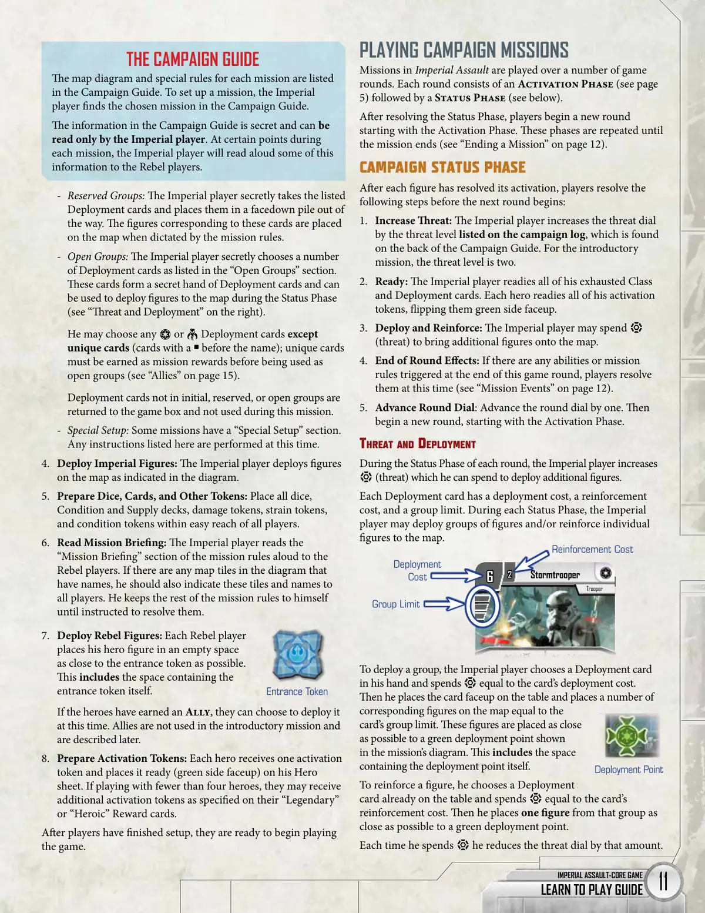
📝 第 11 页 AI 机翻对照（点击展开）
游戏指南
-- 预留组：帝国玩家秘密拿取列出的部署牌，并将它们面朝下放在一旁。这些牌对应的单位模型将在任务规则指定时放置到地图上。
-- 开放组：帝国玩家秘密选择"开放组"部分中列出的数量的部署牌。这些牌构成一个秘密的部署牌手牌，可以在状态阶段期间用来将单位模型部署到地图上（见右侧的"威胁与部署"）。
他可以选择任何U级或W级部署牌，除非是独特牌（名称前有•的牌）；独特牌必须作为任务奖励获得后才能作为开放组使用（见第15页的"盟友"）。
不在初始组、预留组或开放组中的部署牌被放回游戏盒，在本任务中不使用。
-- 特殊设置：有些任务有"特殊设置"部分。此时执行此处列出的任何说明。
4. 部署帝国单位：帝国玩家按照图示将单位模型部署到地图上。
5. 准备骰子、卡牌和其他指示物：将所有骰子、状态和补给牌堆、伤害指示物、压力指示物和状态指示物放在所有玩家容易触及的位置。
6. 阅读任务简介：帝国玩家大声朗读任务规则的"任务简介"部分给反叛玩家。如果图中有任何有名称的板块，他也应向所有玩家指出这些板块和名称。他将任务规则的其余部分留给自己，直到被指示处理它们。
7. 部署反叛单位：每位反叛玩家将他的英雄模型放置在尽可能靠近入口标记的空格中。
这包括包含入口标记本身的空格。
如果英雄们获得了盟友，他们可以选择此时部署盟友。盟友在新手任务中不使用，将在后面描述。
8. 准备激活标记：每位英雄获得一个激活标记，并将其准备就绪（绿色面朝上）放在他的英雄卡上。如果使用少于四个英雄，他们可以根据其"传奇"或"英勇"奖励卡上的说明获得额外的激活标记。
玩家完成设置后，就可以开始玩游戏了。
进行战役任务
《帝国突击》中的任务在多个游戏回合中进行。每个回合包括一个激活阶段（见第5页）和一个状态阶段（见下文）。
在解决状态阶段后，玩家开始一个新的回合，从激活阶段开始。这些阶段重复进行，直到任务结束（见第12页的"结束任务"）。
战役状态阶段
在每个单位完成其激活后，玩家在下一轮开始前执行以下步骤：
- 增加威胁值：帝国玩家根据战役日志上列出的威胁等级增加威胁指示盘，该日志位于战役指南的背面。对于入门任务，威胁等级为二。
2. 准备：帝国玩家准备其所有已疲劳的类别和部署卡牌。每位英雄准备其所有激活指示物，将其翻至绿色面朝上。
3. 部署与增援：帝国玩家可以花费D（威胁值）将额外单位部署到地图上。
4. 回合结束效果：如果有任何能力或任务规则在本游戏回合结束时触发，玩家此时解决它们（参见第12页的"任务事件"）。
- 推进轮次指示盘：将轮次指示盘推进一格。然后开始新一轮，从激活阶段开始。
威胁值与部署
在每轮的状态阶段，帝国玩家增加D（威胁值），他可以花费这些威胁值来部署额外单位。
每张部署卡牌都有部署成本、增援成本和组数限制。在每个状态阶段，帝国玩家可以部署单位组和/或增援单个单位到地图上。
要部署一个单位组，帝国玩家选择其手牌中的一张部署卡牌，并花费等于该卡牌部署成本的D值。然后将该卡牌正面朝上放在桌面上，并在地图上放置数量等于该卡牌组数限制的相应单位。这些单位尽可能放置在任务图示中显示的绿色部署点附近。这包括包含部署点本身的空间。
要增援一个单位，他选择一张已在桌面上的部署卡牌，并花费等于该卡牌增援成本的D值。然后他从该组中放置一个单位，尽可能靠近一个绿色部署点。
每次他花费D值时，威胁指示盘会相应减少该数值。
暴风兵
B: +1H
B: +2 精确度
士兵
组数限制
部署成本
增援成本
战役指南
每个任务的地图图示和特殊规则都列在战役指南中。要设置一个任务，帝国玩家在战役指南中找到所选任务。
战役指南中的信息是保密的，只能由帝国玩家阅读。在每个任务期间的特定时刻，帝国玩家会向反叛玩家大声朗读其中部分信息。
部署点
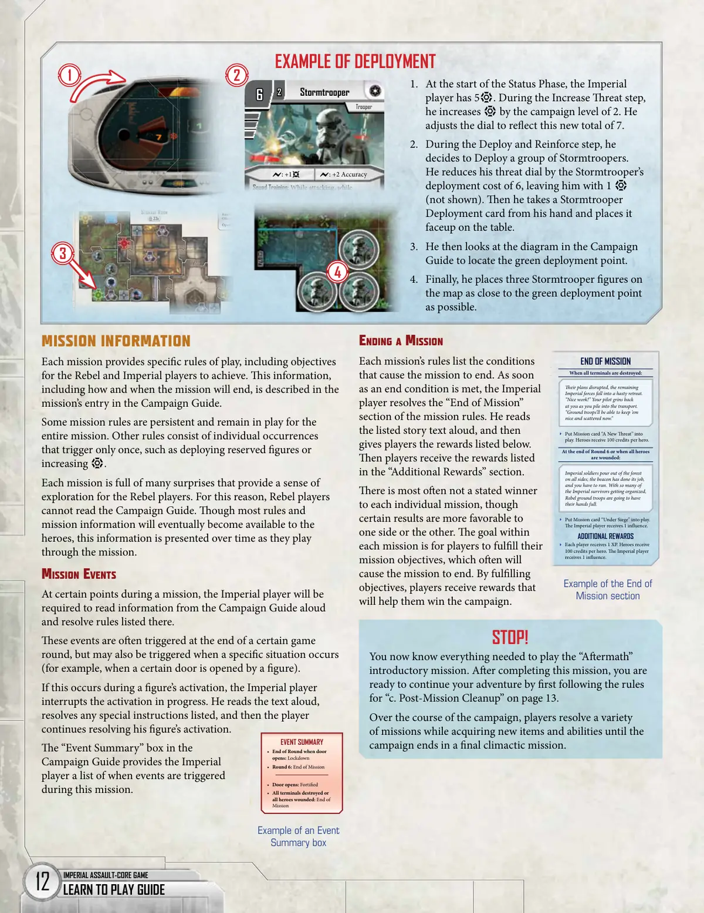
📝 第 12 页 AI 机翻对照（点击展开）
入门指南
任务信息
每个任务都提供特定的游戏规则，包括反抗军和帝国玩家需要达成的目标。这些信息，包括任务如何以及何时结束，都在战役指南的任务条目中有描述。
一些任务规则是持续性的，在整个任务期间都有效。其他规则则由单个事件组成，这些事件只触发一次，例如部署预备角色或增加D。
每个任务都充满了许多惊喜，为反抗军玩家提供探索感。因此，反抗军玩家不能阅读战役指南。尽管大多数规则和任务信息最终会提供给英雄们，但这些信息会随着他们进行任务而逐渐呈现。
任务事件
在任务过程中的某些特定时刻，帝国玩家需要大声朗读战役指南中的信息并解决其中列出的规则。
这些事件通常在某个游戏回合结束时触发，但也可能在特定情况发生时触发（例如，当某个角色打开特定门时）。
如果这发生在角色激活期间，帝国玩家会中断当前进行的激活。他大声朗读文本，解决列出的任何特殊说明，然后玩家继续解决其角色的激活。
战役指南中的"事件摘要"框为帝国玩家提供了本任务中事件触发时间的列表。
结束任务
每个任务的规则列出了导致任务结束的条件。一旦满足结束条件，帝国玩家就会解决任务规则的"任务结束"部分。他大声朗读列出的故事文本，然后给予玩家下面列出的奖励。
然后玩家会收到"额外奖励"部分中列出的奖励。
每个单独的任务通常没有明确的获胜者，尽管某些结果对一方或另一方更有利。每个任务内的目标是让玩家完成他们的任务目标，这通常会导致任务结束。通过完成目标，玩家会获得帮助他们赢得战役的奖励。
停止！
你现在玩"余波"入门任务所需的一切都知道了。完成这个任务后，你就可以通过首先遵循第13页上的"c. 任务后清理"规则来继续你的冒险。
在整个战役过程中，玩家会完成各种任务，同时获得新物品和能力，直到战役在一个最终的史诗级任务中结束。
事件摘要
• 门打开时的回合结束时：封锁
• 第6回合：任务结束
• 门打开：已加固
• 所有终端被摧毁或
所有英雄受伤：任务结束
事件摘要框示例
任务结束
当所有终端被摧毁时：
` 将任务卡"新威胁"(A New Threat)投入游戏。每位英雄获得100信用点。
在第6轮结束时或当所有英雄受伤时：
` 将任务卡"围城"(Under Siege)投入游戏。帝国玩家获得1点影响力。
额外奖励
` 每位玩家获得1点经验值。每位英雄获得100信用点。帝国玩家获得1点影响力。
他们的计划被打乱，剩余的帝国部队匆忙撤退。
"干得好！"你的飞行员对你咧嘴笑着，你们涌上运输机。
"地面部队现在能让他们好好分散了。"
帝国士兵从四面八方的森林涌出；信标已经完成了它的任务，你必须逃跑。由于许多帝国幸存者正在组织起来，反抗军地面部队将忙得不可开交。
任务结束部分示例
部署示例
暴风兵
小队训练：攻击时，d
h
f
dl
B: +1H
B: +2 精准度
士兵
1. 在状态阶段开始时，帝国玩家有5点威胁值(D)。在增加威胁值步骤中，他根据战役等级2增加D。他将威胁值指示器调整至新的总数7。
2. 在部署和增援步骤中，他决定部署一组暴风兵。他将威胁值减少暴风兵的部署成本6，留下1点D(未显示)。然后他从手牌中取出一张暴风兵部署牌，面朝上放在桌上。
3. 接着，他查看战役指南中的图表以找到绿色部署点。
4. 最后，他将三个暴风兵小尽可能放置在靠近绿色部署点的位置。
22b
25b
储物室
中庭
初始暴风兵
预留暴风兵
军官，储物室
开放暴风兵
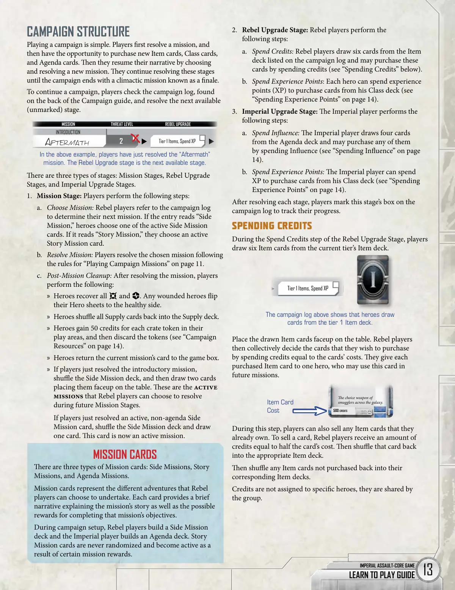
📝 第 13 页 AI 机翻对照（点击展开）
游戏指南
战役结构
进行战役很简单。玩家首先完成一个任务，然后有机会购买新的物品卡牌、职业卡牌和议程卡牌。然后他们通过选择并完成一个新任务来继续他们的叙事。他们继续完成这些阶段，直到以被称为终章的高潮任务结束战役。
要继续战役，玩家查看战役日志（位于战役指南背面），并完成下一个可用的（未标记的）阶段。
有三种类型的阶段：任务阶段、反抗军升级阶段和帝国升级阶段。
1. 任务阶段：玩家执行以下步骤：
a. 选择任务：反抗军玩家参考战役日志确定他们的下一个任务。如果条目显示"支线任务"，英雄们选择一张活跃的支线任务卡。如果显示"主线任务"，他们选择一张活跃的主线任务卡。
b. 完成任务：玩家按照第11页"完成战役任务"的规则完成所选任务。
c. 任务后清理：完成任务后，玩家执行以下操作：
»» 英雄们恢复所有生命值和行动点。任何受伤的英雄将他们的英雄卡翻到健康面。
»» 英雄们将所有补给卡洗回补给牌库。
»» 英雄们根据他们游戏区域中每个补给箱指示物获得50点信用点，然后弃置这些指示物（参见第14页"战役资源"）。
»» 英雄们将当前任务卡放回游戏盒。
»» 如果玩家刚刚完成了入门任务，洗混支线任务牌库，然后抽两张牌面朝上放在桌上。这些是反抗军玩家可以在未来任务阶段选择完成的活跃任务。
如果玩家刚刚完成了一张活跃的、非议程的支线任务卡，洗混支线任务牌库并抽一张牌。这张牌现在是活跃任务。
反抗军升级
威胁等级
任务
简介
1级物品，消耗经验值
余波
在上面的例子中，玩家刚刚完成了"余波"任务。反抗军升级阶段是下一个可用阶段。
2. 反抗军升级阶段：反抗军玩家执行以下步骤：
a. 消耗信用点：反抗军玩家从战役日志上列出的物品牌库抽六张牌，并可以通过消耗信用点购买这些牌（参见下文"消耗信用点"）。
b. 消耗经验点：每个英雄可以消耗经验点(XP)从他的职业牌库购买牌（参见第14页"消耗经验点"）。
3. 帝国升级阶段：帝国玩家执行以下步骤：
a. 消耗影响力：帝国玩家从议程牌库抽四张牌，并可以购买其中任何一张牌
通过消耗影响力（参见第14页的"消耗影响力"）。
b. 消耗经验点：帝国玩家可以消耗XP来购买其职业牌库中的卡牌（参见第14页的"消耗经验点"）。
在完成每个阶段后，玩家在战役记录上标记该阶段的方框以追踪他们的进度。
消耗信用点
在叛军升级阶段的消耗信用点步骤中，玩家从当前等级的物品牌库中抽取六张物品卡。
上面的战役记录显示英雄们从1级物品牌库中抽取卡牌。
1级物品，消耗XP
将抽取的物品卡正面朝上放在桌上。叛军玩家集体决定他们希望购买的卡牌，通过花费等于卡牌成本的信用点。他们将每张购买的物品卡交给一名英雄，该英雄可以在未来的任务中使用这张卡牌。
物品卡
成本
©LFL
©FFG
全星系走私者的首选武器。
500信用点
在此步骤中，玩家还可以出售他们已经拥有的任何物品卡。要出售一张卡牌，叛军玩家获得等于卡牌成本一半的信用点。然后将那张牌洗回相应的物品牌库。
然后将任何未被购买的物品牌洗回其对应的物品牌库。
信用点不分配给特定英雄，由整个团队共享。
任务卡
有三种类型的任务卡：支线任务、故事任务和议程任务。
任务卡代表叛军玩家可以选择承担的不同冒险。每张卡提供简短的叙事，解释任务的故事以及完成该任务目标可能获得的奖励。
在战役设置期间，叛军玩家构建一个支线任务牌库，帝国玩家构建一个议程牌库。故事任务卡从不随机化，并作为某些任务奖励的结果而激活。
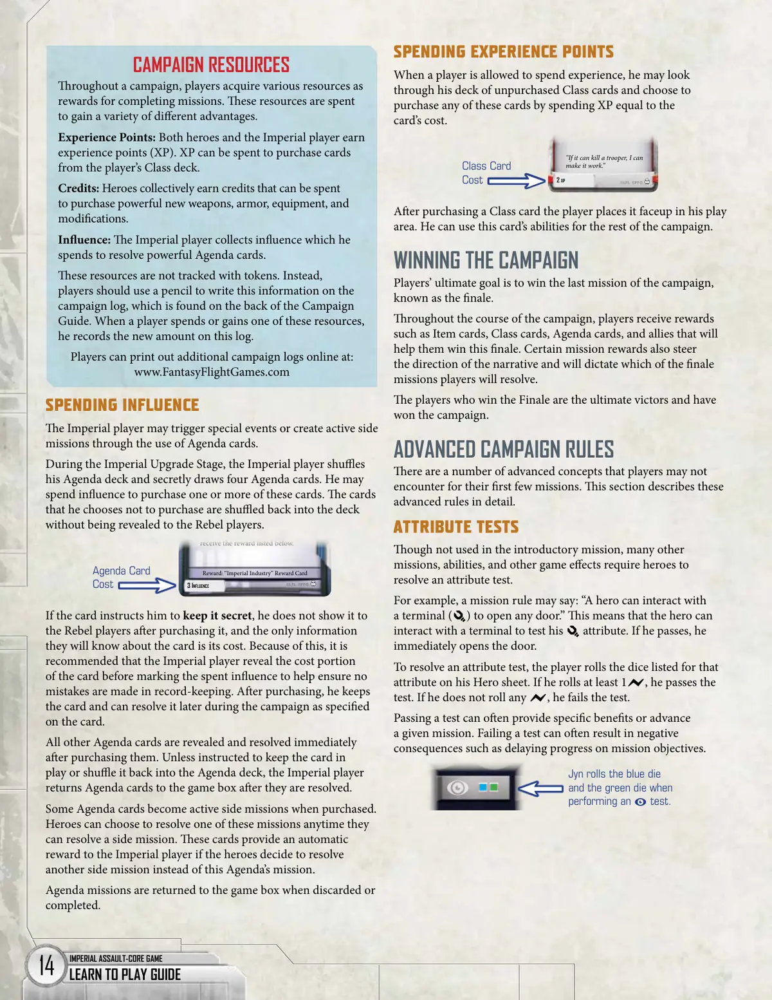
📝 第 14 页 AI 机翻对照（点击展开）
游戏指南
使用影响力
帝国玩家可以通过使用议程卡来触发特殊事件或创建主动的边线任务。
在帝国升级阶段，帝国玩家洗混他的牌库并秘密抽取四张议程卡。他可以花费影响力来购买其中一张或多张卡片。他选择不购买的卡片会被洗回牌库，且不向反抗军玩家展示。
议程卡
费用
奖励："帝国工业"奖励卡
边线任务，弃掉此卡并获得下列奖励。
3 影响力
©LFL ©FFG
如果卡片指示他保密，购买后他不向反抗军玩家展示此卡，他们唯一知道的关于这张卡的信息是它的费用。因此，建议帝国玩家在标记已花费的影响力前先展示卡片的费用部分，以帮助确保记录不会出错。购买后，他保留此卡，可以在战役过程中根据卡片上的说明稍后解决它。
所有其他议程卡在购买后立即展示并解决。除非指示保留卡牌在游戏中或将其洗回议程牌库，帝国玩家在解决议程卡后将它们放回游戏盒。
一些议程卡在购买后会成为主动的边线任务。英雄可以在能够解决边线任务的任何时候选择解决其中一项任务。如果英雄决定解决其他边线任务而不是这项议程的任务，这些卡将为帝国玩家提供自动奖励。
议程任务在弃置或完成时被放回游戏盒。
使用经验点
当玩家被允许使用经验点时，他可以查看他未购买的职业牌库，并通过花费等于卡片费用的XP来选择购买其中任何一张卡片。
职业牌
费用
©LFL ©FFG
"如果它能杀死一个暴兵，我就能让它工作。"
2 xp
购买职业牌后，玩家将其面朝上放置在他的游戏区域。他可以在战役的剩余时间里使用这张牌的能力。
赢得战役
玩家的最终目标是赢得战役的最后一个任务，被称为终局。
在整个战役过程中，玩家会获得奖励，如物品卡、职业卡、议程卡和盟友，这些将帮助他们赢得这个终局。某些任务奖励也会引导故事的方向，并决定玩家将解决哪个终局任务。
赢得终局的玩家是最终的胜利者，赢得了战役。
高级战役规则
有一些高级概念玩家可能不会
在他们最初的几个任务中遭遇。本节详细描述了这些进阶规则。
属性检定
虽然在入门任务中不会使用，但许多其他任务、能力和其他游戏效果都需要英雄进行属性检定。
例如，一个任务规则可能会说："英雄可以与终端(I)互动来打开任意一扇门。"这意味着英雄可以与终端互动来测试他的I属性。如果他通过，他立即打开门。
要进行属性检定，玩家掷出他英雄卡上该属性列出的骰子。如果他掷出至少1个B，他通过检定。如果他没有任何B，他则检定失败。
通过检定通常能提供特定好处或推进特定任务。检定失败则可能导致负面后果，例如延迟任务目标的进展。
Jyn在进行J检定时掷出蓝色骰子和绿色骰子。
战役资源
在整个战役中，玩家通过完成任务获得各种资源作为奖励。这些资源被用来获得各种不同的优势。
经验值：英雄和帝国玩家都获得经验值(XP)。XP可以用来购买玩家职业牌库中的卡牌。
信用点：英雄集体获得信用点，可以用来购买强大的新武器、护甲、装备和改装件。
影响力：帝国玩家收集影响力，用来解决强大的议程卡。
这些资源不使用指示物来追踪。相反，玩家应该用铅笔将这些信息记录在战役日志上，该日志位于战役指南的背面。当玩家花费或获得其中一种资源时，他在该日志上记录新的数量。
玩家可以在网上打印额外的战役日志：
www.FantasyFlightGames.com
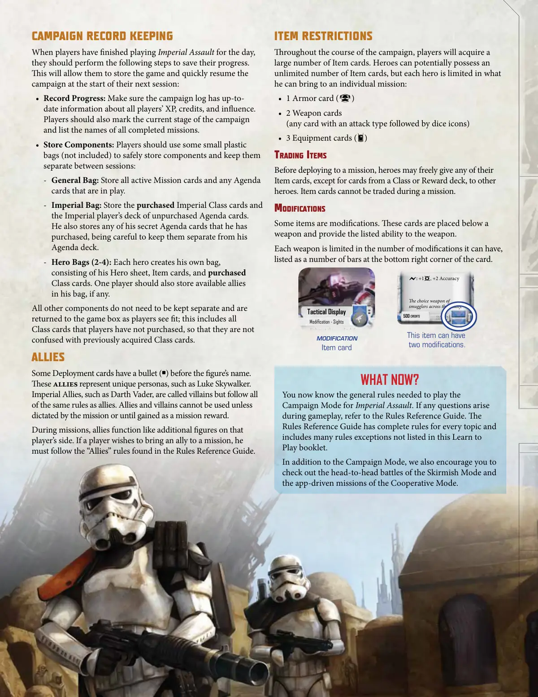
📝 第 15 页 AI 机翻对照（点击展开）
游戏指南
战役记录保存
当玩家当天完成《星球大战：侵略战》(Imperial Assault) 的游戏后，
他们应执行以下步骤来保存进度。
这将使他们能够存储游戏，并在下一次游戏开始时
快速继续战役：
• 记录进度：确保战役日志包含所有玩家的经验值(XP)、信用点和影响力的最新信息。
玩家还应标记战役的当前阶段，并列出所有已完成任务的名称。
• 存储组件：玩家应使用一些小塑料袋(不包含在内)来安全存储组件，并在不同游戏会话间保持它们分开：
-- 通用袋：存储所有活跃的任务卡和任何正在使用的议程卡。
-- 帝国袋：存储已购买的帝国级卡牌和帝国玩家未购买的议程牌库。
他还存储他已购买的任何秘密议程卡，注意将它们与他的议程牌库分开存放。
-- 英雄袋(2-4个)：每个英雄创建自己的袋子，包含他的英雄版图、物品卡和已购买的级卡。如果有可用盟友，一名玩家也应将其存放在自己的袋子中。
所有其他组件不需要分开存放，玩家可根据需要将其放回游戏盒；这包括所有玩家未购买的级卡，以免与先前获得的级卡混淆。
盟友
一些部署卡在角色名称前有一个项目符号(•)。这些盟友代表独特的人物，如卢克·天行者(Luke Skywalker)。帝国盟友，如达斯·维达(Darth Vader)，被称为反派，但遵循所有与盟友相同的规则。盟友和反派不能使用，除非任务指定或作为任务奖励获得。
在任务期间，盟友就像该玩家方额外的角色。如果玩家希望带盟友参加任务，他必须遵循规则参考指南中的"盟友"规则。
物品限制
在整个战役过程中，玩家将获得大量物品卡。英雄可以拥有无限数量的物品卡，但每个英雄在参加单个任务时能携带的物品数量有限：
• 1张护甲卡(R)
• 2张武器卡
(任何带有攻击类型后跟骰子图标的卡牌)
• 3张装备卡(S)
交易物品
在部署到任务前，英雄可以自由地将他们的任何物品卡(来自级牌或奖励牌库的卡除外)给予其他英雄。物品卡不能在任务期间交易。
改装
一些物品是改装。这些卡被放置在武器下方，为武器提供列出的能力。
每件武器可拥有的改装数量有限，
列在卡牌右下角的条形数量。
修改
物品卡牌
修改 - 瞄准具
战术显示器
exhaustion this card while
This item can have
two modifications.
©LFL
©FFG
走私犯在整个银河系中的
首选武器。
500 信用点
B: +2H
B: +1H, +2 精确度
接下来怎么办？
您现在已了解游玩《星球大战：突击队》战役模式所需的
基本规则。如果在游戏过程中出现任何问题，请查阅
规则参考指南。规则参考指南包含每个主题的完整规则，
并包含许多未列在本"入门游玩"手册中的规则例外。
除了战役模式外，我们还鼓励您体验
遭遇战模式的正面交锋，以及由应用程序驱动的
合作模式任务。
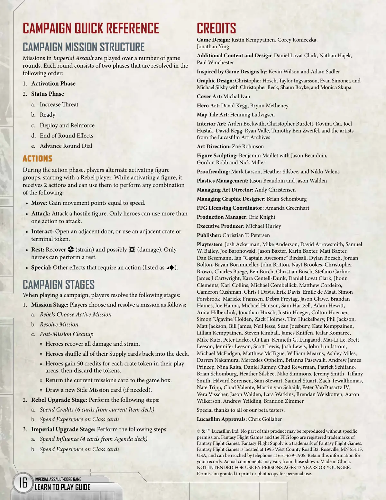
📝 第 16 页 AI 机翻对照（点击展开）
入门指南
战役快速参考
战役任务结构
《星球大战：侵略战》(Imperial Assault) 中的任务会进行多轮游戏。每轮包含两个阶段，按以下顺序解决：
1. 激活阶段
2. 状态阶段
a. 增加威胁
b. 准备
c. 部署和增援
d. 回合结束效果
e. 推进轮次指示器
行动
在行动阶段，玩家轮流激活单位组，从叛军玩家开始。激活单位时，它获得2个行动点，可以使用它们执行以下任何组合：
• 移动：获得等于速度值的移动力。
• 攻击：攻击敌方单位。只有英雄可以使用超过一个行动点进行攻击。
• 互动：打开相邻的门，或使用相邻的板条箱或终端指示物。
• 休息：恢复C（疲劳值）和可能的H（伤害值）。只有英雄可以执行休息。
• 特殊：需要行动的其他效果（标记为A）。
战役阶段
进行战役时，玩家解决以下阶段：
- 任务阶段：玩家选择并解决任务，如下所示：
a. 叛军选择活跃任务
b. 解决任务
c. 任务后清理
»» 英雄恢复所有伤害和疲劳值。
»» 英雄将所有他们的补给牌洗回牌库。
»» 英雄根据其游戏区域中的每个板条箱指示物获得50信用点，然后弃置这些指示物。
»» 将当前任务卡放回游戏盒。
»» 抽取新的侧边任务卡（如果需要）。
2. 叛军升级阶段：执行以下步骤：
a. 消耗信用点（从当前物品牌库中抽取6张牌）
b. 在职业牌上消耗经验值
3. 帝国升级阶段：执行以下步骤：
a. 消耗影响力（从议程牌库中抽取4张牌）
b. 在职业牌上消耗经验值
信用点
游戏设计：Justin Kemppainen, Corey Konieczka, Jonathan Ying
额外内容与设计：Daniel Lovat Clark, Nathan Hajek, Paul Winchester
灵感来源于游戏设计：Kevin Wilson 和 Adam Sadler
平面设计：Christopher Hosch, Taylor Ingvarsson, Evan Simonet, 以及 Christopher Beck, Shaun Boyke, 和 Monica Skupa
封面艺术：Michal Ivan
英雄艺术：David Kegg, Brynn Metheney
地图板块艺术：Henning Ludvigsen
内部艺术：Arden Beckwith, Christopher Burdett, Rovina Cai, Joel Hustak, David Kegg, Ryan Valle, Timothy Ben Zweifel, 以及卢卡斯影业艺术档案馆的艺术家们
艺术指导：Zoë Robinson
人偶雕塑：Benjamin Maillet 与 Jason Beaudoin, Gordon Robb 和 Nick Miller
校对：Mark Larson, Heather Silsbee, 和 Nikki Valens
塑料管理：Jason Beaudoin 和 Jason Walden
管理艺术总监：Andy Christensen
管理平面设计师：Brian Schomburg
FFG授权协调员：Amanda Greenhart
生产经理：Eric Knight
执行制片人：Michael Hurley
出版商：Christian T. Petersen
测试玩家：Josh Ackerman, Mike Anderson, David Arrowsmith, Samuel
W. Bailey, Joe Baronowski, Jason Baxter, Karin Baxter, Matt Baxter,
Dan Besemann, Ian "Captain Awesome" Birdsall, Dylan Boesch, Jordan
Bolton, Bryan Bornmueller, John Britton, Nayt Brookes, Christopher
Brown, Charles Buege, Ben Burch, Christian Busch, Stefano Carlino,
James J Cartwright, Kara Centell-Dunk, Daniel Lovat Clark, Jhonn
Clements, Karl Collins, Michael Combellick, Matthew Cordeiro,
Cameron Cushman, Chris J Davis, Erik Davis, Emile de Maat, Simon
Forsbrook, Marieke Franssen, Debra Freytag, Jason Glawe, Brandan
Haines, Joe Hanna, Michael Hanson, Sam Hartzell, Adam Hewitt,
Anita Hilberdink, Jonathan Hirsch, Justin Hoeger, Colton Hoerner,
Simon 'Ugavine' Holden, Zack Holmes, Tim Huckelbery, Phil Jackson,
Matt Jackson, Bill James, Neil Jesse, Sean Joesbury, Kate Kemppainen,
Lillian Kemppainen, Steven Kimball, James Kniffen, Kalar Komarec,
Mike Kutz, Peter Lacko, Oli Lan, Kenneth G. Langaard, Mai-Li Le, Brett
Leeson, Jennifer Leeson, Scott Lewis, Josh Lewis, John Lundstrom,
Michael McFadgen, Matthew McTigue, William Mearns, Ashley Miles,
Darren Nakamura, Mercedes Opheim, Brianna Pasewalk, Andrew James
Princep, Nina Raita, Daniel Ramey, Chad Reverman, Patrick Schifano,
Brian Schomburg, Heather Silsbee, Niko Simmons, Jeremy Smith, Tiffany
Smith, Håvard Sørensen, Sam Stewart, Samuel Stuart, Zach Tewalthomas,
Nate Tripp, Chad Valente, Martin van Schaijk, Peter VanDusartz IV,
Vera Visscher, Jason Walden, Lara Watkins, Brendan Weiskotten, Aaron
Wilkerson, Andrew Yeilding, Brandon Zimmer
特别感谢我们所有的Beta测试玩家。
卢卡斯影业审批：Chris Gollaher
© & TM 卢卡斯影业有限公司。未经特别许可，不得复制本产品的任何部分。
Fantasy Flight Games和FFG标志是Fantasy Flight Games的注册商标。
Fantasy Flight Supply是Fantasy Flight Games的商标。
Fantasy Flight Games位于美国明尼苏达州罗斯维尔市西县路B2号1995号，电话651-639-1905。请保留此信息以备记录。实际组件可能与所示有所不同。中国制造。
不适用于13岁及以下人士使用。
获准用于个人打印或复印。